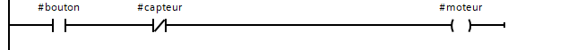
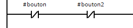
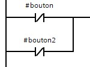
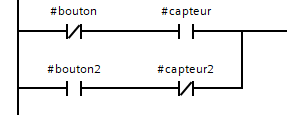
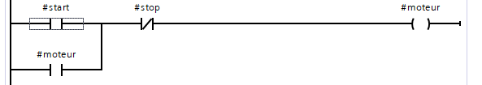

Quand, Où, Pourquoi ?
Le Ladder Diagramme (LD) est utilisé lorsque l’automatisme repose principalement sur des logiques tout ou rien (ON/OFF) et des enchaînements simples de conditions. Inspiré des schémas électriques à relais, il permet de représenter le fonctionnement d’une machine de manière graphique et intuitive.
On utilise le Ladder pour la commande des entrées et des sorties, comme les moteurs, pompes, vérins, voyants ou capteurs. Il est particulièrement adapté aux systèmes de commande classiques, largement répandus dans l’industrie.
Logique
Le Ladder repose sur une logique booléenne représentée graphiquement, inspirée des schémas électriques à relais.
Le programme se lis de gauche à droite et de haut en bas. Il convient donc de mettre les sécurités au début de la boucle ladder.
Contact normalement ouvert (NO) | |Le contact est passant lorsque la variable associée est vraie.
Contact normalement fermé (NF) | / |Le contact est passant lorsque la variable associée est fausse.
Contact front montant |P|Le contact s’active au front montant de l’entrée (passage de 0 à 1).
Contact front descendant |N|Le contact s’active au front descendant de l’entrée (passage de 1 à 0).
Bobine ( )La bobine représente l’action ou la sortie commandée. Elle est activée lorsque le réseau logique est vrai.
Bobine Set (S)Active une sortie et la maintient à « 1 » (ON) même si les conditions redeviennent fausses.
Bobine Reset (R)Désactive une sortie et la maintient à « 0 » (OFF) même si les conditions redeviennent vraies.
Contact respectivement NO, puis NF qui gère l'activation d'une bobine moteur
Contacts montés en série.
Logique ORContacts montés en parallèle.

logique AND & OR
La logique NOR correspond à la négation de la logique OR. Elle est réalisée en Ladder par des contacts normalement fermés (NF) montés en série. La sortie est vraie uniquement lorsque toutes les entrées sont fausses.
logique NOR
La logique NAND correspond à la négation de la logique ET. Elle est réalisée par des contacts normalement fermés montés en parallèle. La sortie est fausse uniquement lorsque toutes les entrées sont vraies.
logique NAND
La logique XOR (OU exclusif) est vraie lorsque une seule entrée est vraie. En Ladder, elle est réalisée par une combinaison de :
logique XOR
Fonction interne
Les fonctions internes sont des blocs intégrés à l’automate permettant de traiter le temps, le comptage et la logique avancée.
Temporisateur (Timer)- TON : temporisation à l’enclenchement
- TOF : temporisation au déclenchement
- TP : impulsion temporisée
- CTU : compteur incrémental
- CTD : compteur décrémental
- CTUD : compteur incrémental/décrémental
- SET : mise à 1 mémorisée
- RESET : remise à 0 mémorisée
Permettent de comparer des valeurs numériques :
- = égal
- < inférieur
- > supérieur
Exemples :
logique de controle d'un moteur en Ladder